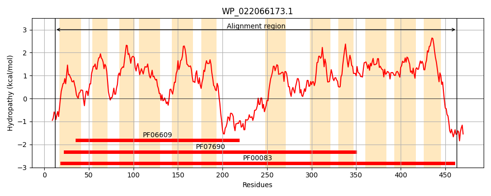
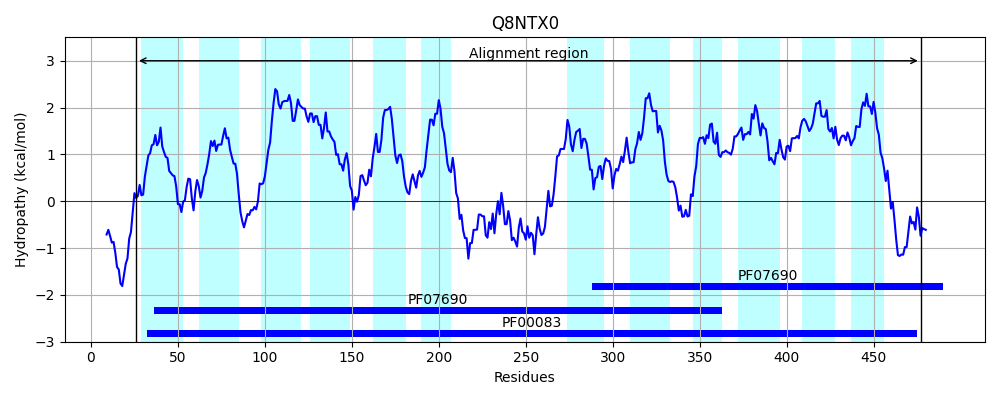
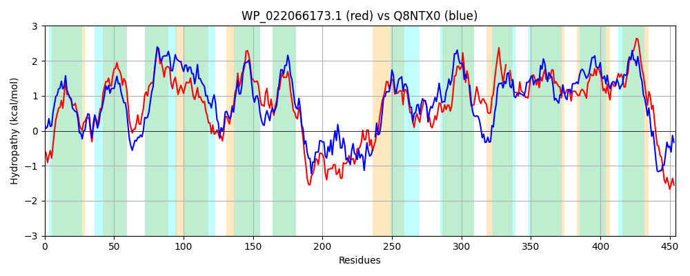

Hit Accession: Q8NTX0
Hit TCID: 2.A.1.1.53
Hit Description: gnl|BL_ORD_ID|16676 gnl|TC-DB|Q8NTX0|2.A.1.1.53 Permeases of the major facilitator superfamily - Corynebacterium glutamicum (Brevibacterium flavum).
Mach Len: 454
e:0.000000
Query TMS Count : 12
Hit TMS Count: 12
TMS-Overlap Score: 11.400000
Predicted Substrates:CHEBI:10601;myo-inositol, CHEBI:5418;glucose
BLAST Alignment:
Score: 1069 , Bit scores: 416 bits, E-value: 4.7e-142, Alignment length: 454, Percentage identity: 47
Query: 12 RKRLHQITLVATFGGLLFGYDTGVINGAFSSLKQYMALTPTTEGLVMSVLLIGAALGSVFGGKFADFFGRRKYLLFLSFIFLIGALLSAAAPDITTLLIARALLGYAVGGASVTAPTFISEVAPTEMRGKLTGLNEVAIVIGQLAAFAINAIIGIIWGHLPDVWRYMLLVQAIPAVCLFVGMWRAPESPRWLISKNRHEEALHILKQIRPAERAQKEYDDISTLIKIEAGNKYSAQGTFTTILKTPWILKILLVGITWAALQQTTGVNVIMYYGTEILSAAGFSERTSLICNVLNGVFSVGGMLIGVLFLVDRFKRKTIIIYGFAIMATLHLI--IAAVDYTLVGDLKATAIWLLGALFVGVMQGSMGFITWVVLAELFPLKFRGLSMGISVFFMWIMNAVVSYLFPLLQAKLGLGPVFFIFAAINYLAILFVVFALPETSNKSLEQLEEELSA 463
RKRL + LVATFGGLLFGYDTGVINGA + + + + LT TEG+V S LL GAA G++F G+ +D +GRRK ++ L+ F +G ++ AP +++ R LLG AVGGAS P +++E+AP E+RG L G NE+ IV+GQLAAF INAIIG ++GH VWRYML + AIPA+ LF GM R PESPRWL+ + R +EA +L+ IRP ERA E D+ L + E + G IL + W+++ILLVGI QQ TG+N IMYYG +L AGFSE +LI NV GV +V G I L+++DR R+T +I G+++ H++ IA+V + + L+ I L +FVG MQ + TWV+L+ELFPL RG ++GISVFF+WI NA + FP + +GL FF+FA I +A++F+ +PET ++LE+++E++++
Sbjct: 26 RKRLFYVALVATFGGLLFGYDTGVINGALNPMTRELGLTAFTEGVVTSSLLFGAAAGAMFFGRISDNWGRRKTIISLAVAFFVGTMICVFAPSFAVMVVGRVLLGLAVGGASTVVPVYLAELAPFEIRGSLAGRNELMIVVGQLAAFVINAIIGNVFGHHDGVWRYMLAIAAIPAIALFFGMLRVPESPRWLVERGRIDEARAVLETIRPLERAHAEVADVEHLAREEHAVSEKSMG-LREILSSKWLVRILLVGIGLGVAQQLTGINSIMYYGQVVLIEAGFSENAALIANVAPGVIAVVGAFI-ALWMMDRINRRTTLITGYSLTTISHVLIGIASVAFPVGDPLRPYVILTLVVVFVGSMQTFLNVATWVMLSELFPLAMRGFAIGISVFFLWIANAFLGLFFPTIMEAVGLTGTFFMFAGIGVVALIFIYTQVPETRGRTLEEIDEDVTS 477 | Protein Hydropathy Plots: |
|---|
|  |  |
Pairwise Alignment-Hydropathy Plot:
|
|---|
|  |